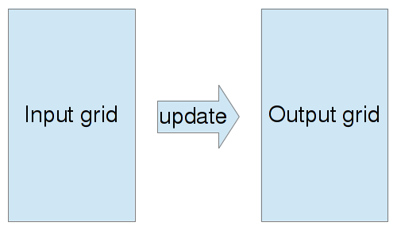
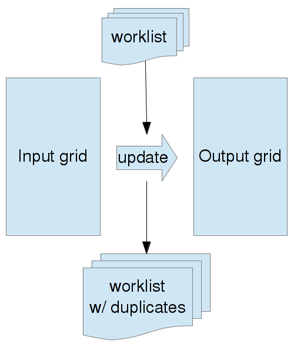
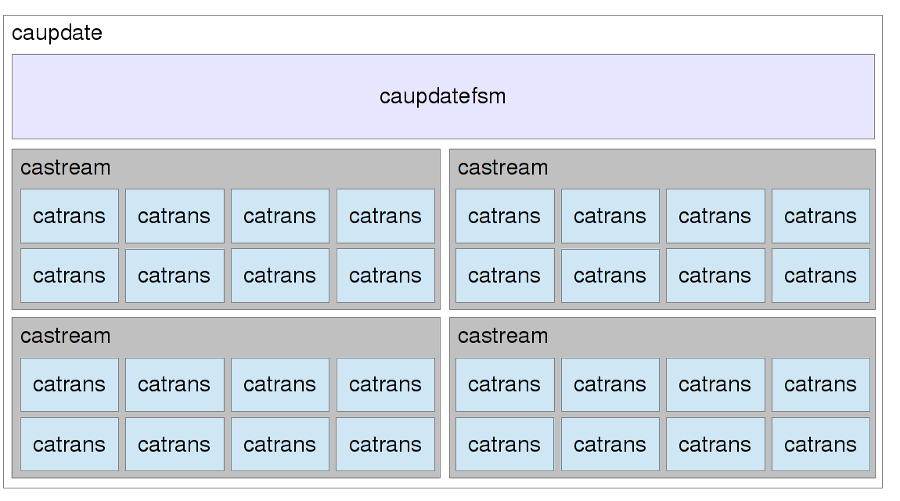

I implemented simulation of two classes of cellular automata on the GPU. I designed, implemented and tested a special purpose core to perform this task on an FPGA. My results indicate that CA simulation can benefit from GPU parallelization and that FPGAs can be very competitive with high-end GPUs.
Cellular automata are best known for Conway's Game of Life but they are also employed to simulate a wide variety of physical phenomena, such as lava flow. Speed is crucial in scientific computing, hence the motivation to take advantage of all available parallel hardware to efficiently simulate large systems.
The core data structure of a cellular automaton is a grid of cells. Each cell can take predetermined number of states, defined by the CA rule being simulated. The simulation algorithm boils down to a map operation : a transfer function is applied to each cell of the grid of generation n to get the grid of generation n+1.
Because each cell can be updated independently, this algorithm can easily take advantage of massively parallel hardware. The biggest challenge to an efficient implementation is to minimize the amount of work by restricting the update operation to cells that are likely to change.
The most straightfoward approach is to use a worklist. When the state of a cell changes it is added back to the worklist and all its immediate neighbours are added as well as they might be affected by this change. This implies that a given cell can be added to the worklist up to 9 times so the worklist needs to be filtered to avoid an exponential explosion of duplicate work.
As each cell needs to know the state of its neighbours (eight in a square 2D grid), the optimization of memory access patterns is crucial to achieving high throughput.
To address the issue of redundant memory accesses, the first design decision was to process the input grid at "macrocell" (rectangle of adjacent cells) granularity. This decomposition allows cells to "mutualize" their memory loads and is also very well adapted to the massively parallel hardware of a GPU and a FPGA.
The first target platform was programmable GPUs. This project only supports CUDA-capable GPUs (Compute 1.1 and up) but could be adapted to all OpenCL-capable ones.
To support a wide variety of CA rules while keeping the memory usage reasonable for those that only need a handful of states, cell data was sized to a single byte.
In the update kernel, each thread block was assigned one macrocell which allowed cooperative load of cell states from the input grid into shared memory, significantly reducing the memory bandwidth requirements. Each thread was responsible for the update of fours adjacent cells. This corresponds to each thread updating a single 32bit integer, which was important to avoid shared memory bank conflicts and allow good coalescing of memory writes. Crucially, this gives a more consistent performance between devices of different Compute capability which have different ways of handling byte-sized accesses (sometimes with severe limitations).
Several optimizations of the update code itself where tried, with careful observation of the resulting PTX assembly. This lead to some non-negligible improvements but was ultimately limited by the fact that most of the CA rules tested used a neighbour count which was hard to optimize without significantly more bit manipulation than is possible on a GPU.
The handling of the worklist came with interesting trade-offs. To take full advantage of the worklist approach, a fine modification detection was used to only add neighbours whose boundary had changed. This added a significant overhead to the update kernel and significant thread divergence but it reduced the amount of global memory writes, the contention on the worklist and crucially kept the worklist significantly less populated.
To remove duplicates from the worklist it is simplest to first sort it, which then allows efficient removal of adjacent duplicates. A fast shared-memory fused sort-filter was implemented for small worklists (under 512 items). Initially, thrust was used to handle larger cases (thrust::sort followed by thrust::unique_copy) but it proved to be extremely slow so a CPU-based implementation was used for intermediate worklist sizes. Despite the need to move data from GPU to CPU and back, and the lack of parallelism, it performed surprisingly well. Given more time, it would have been interesting to implement a global-memory version of the fused sort-filter.
Quite interestingly, the optimization process was made a lot harder than I expected by my choice to support both Compute 1.1 and Compute 2.x devices. Some changes improved the performance on the GF9500M in my laptop but decreased it on the GTX480 in Gates machines or vice-versa.
The second target platform was FPGAs. I had access to a XUPV5-LX110T evaluation board from Xilinx and wanted to see if it could be competitive with a GPU for the problem of CA simulation. I used VHDL for my design, ghdl and gtkwave for simulations and Xilinx ISE for synthesis and programming the FPGA.
The main concern when designing my solution was the memory bandwidth. Because I was starting from scratch and had very little time available, I knew all too well that I couldn't possibly compete with the 177GB/s bandwidth of a GTX480 so I had to assume limited bandwidth and make the most out of it. An important difference with the GPU implementation in that regard is that FPGAs allow fine-grained bit manipulations which allowed to use a little as 1 bit per cell.
A bottom-up approach was used. The innermost unit implementing the CA rule (transfer function from generation n to generation n+1), named catrans, was designed first. This unit has a 1 clock cycle latency.
One level up, castream takes a stream as input, keeps track of the last two and builds appropriate neighbourhoods to feed to a group of catrans units. This unit has a 1 clock cycle steady-state latency and 2 clock cycles setup latency.
At the top of the hierarchy, caupdate takes (X,Y) macrocell coordinates as input and performs the necessary memory accesses to feed data to a group of castream units. The caupdate unit incorporate a small cache which avoid redudant memory accesses when streaming through macrocells by increasing X coordinate while keeping Y constant. Depending on whether the cache is hit, this unit can have a latency of 1 to 3 clock cycles per (macrocell) row.
The final design above takes a 32bit memory bus and distributes it to four 8bit-wide castream units. Similar to the GPU implementation, the macrocell height was 16 rows.
Due to time constraints, only Life-like (2-states outer-totalistic) CAs are supported in this implementation but supporting different CAs would be as simple as scaling the input signals to support larger states and changing the internals of the catrans unit.
Time constraints are also to blame for the absence of I/O components that would allow this design to be properly tested on an FPGA.
To be able to accurately compare the two implementations, the size of test patterns was limited to 1024x1024 cells. On the GPU, the most interesting metric was the number of generations per second as it allowed to assess the benefit of the worklist approach. However, when comparing the GPU and FPGA implmentations, it was much more interesting to compare the throughput in terms of cell updates per second.
For the GPU implementation, the test code loaded input patterns from files (mostly PGM images but the custom Wireworld pattern file was also supported), ran a given CA rule for a given number of generations and wrote the output pattern back to a file. To assess the behavior of the worklist under different workloads, patterns of different densities were used.
The performance of the GPU implmentation was mostly limited by thread divergence and the relative complexity of the actual CA update rules. Interestingly, while the problem could have been expected to be bandwidth-bound, after optimizing the memory access patterns to take advantage of locality, it turned out to be compute bound.
The distribution of the work between the two phases of the algorithm is heavily dependent on the input pattern. When the pattern has few cells changing at any given time, most of the time will be spent in the update kernel. However, input patterns with large number of macrocells changing simultaneously will put much more pressure on the worklist, sometimes to the point of making the worklist management itself take more time than a naive update of the whole grid. There are a couple of ways to mitigate this issue but they haven't been explored in this project due to lack of time.
The GPU implementation was tested on the following configurations :
| Test case | Algorithm | Generation/s (1) | Generation/s (2) |
| Corner glider guns / B3S23 | Naive | 336 | 11578 |
| Corner glider guns / B3S23 (small worklist) | Worlist | 4560 | 16859 |
| Corner glider guns / B2S23 (full worklist) | Worlist | 309 | 1182 |
Interestingly, the GTX480 benefits less from the worklist approach because it has a much larger number of CUDA cores and is therefore not significantly stressed by a 1024x1024 grid. The effect of the full grid is muddied by the use of a serial sort-filter (due to poor performance of thrust on mid-sized inputs and lack of time to adapt the shared-memory fused sort-filter to larger input sizes).
The FPGA implementation was not tested on the FPGA due to lack of time to implement a proper test harness. All performance figures are simple calculations based on the latency of each component and the specification of the FPGA.
Thanks to the extensive use of pipelining and the flexibility of FPGAs, the implementation is extremely scalable and the throughput is only limited by clock frequency and available memory bandwidth. The default clock on the XUPV5 is 100MHz, the underlying Virtex5 can scale to clock frequency up to 550MHz and Xilinx synthesis timing report indicates that the design, despite not having been through much optimization, can work up to 250MHz. Although I assumed a 32bit memory bandwidth for simplicity, by splitting the memory into "row of macrocells"-sized banks it would be possible to significantly scale up the memory bandwidth without significantly increasing the overall complexity of the design.
The performance for naive updating of a 1024x1024 input grid is as follows :
| Device | Cores | Clock speed (MHz) | Bandwidth (GB/s) | Throughput (Gcells/s) |
| 9500M GS | 32 | 950 | 22.4 | 0.34 |
| GTX 480 | 480 | 1400 | 177.4 | 12 |
| caupdate | 1 | 100 | 0.4 | 2.5 |
| caupdate | 8 | 250 | 6.4 | 100 |
The choice of target platform was sound but comparing two platforms turned out to be a little ambitious in the given amount of time, mostly because of the higher barrier to entry of FPGA development (starting from scratch is fun but takes a lot of efforts, even for things that are not core goals...).
An archive of the final code is available.